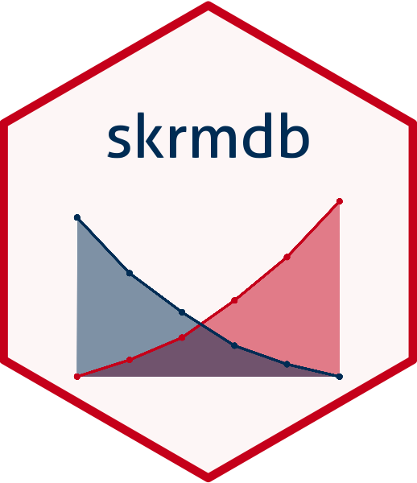

Changelog
Version 5.05
- Added a vignette to explain how Dragstedt-Behrens and Reed-Muench are computed by hand.
Version 5.0.4
- Revised documentation and vignette. In particular, the basic assumptions of
SpearKarb(),DragBehr(), andReedMuench()are now explained in both the vignette and function documentation. Added explanations of feedback messages provided by the functions. - Issue #4: Clarified obscure error messages that occur when one of the count variables is
NAor when the number positive exceeds the total number. - Issue #6: Changed
"even"dilution scheme to"Regular"dilution scheme and clarified the message to indicate that a potential missing dilution was detected. Updated code to reduce false positives. - Issue #7: Report when there is no change in the response, so constant responses are no longer incorrectly identified as either
"increasing"or"decreasing". -
news(package = "skrmdb")works when package it not loaded.
Version 5.0.3
- Issue #5: The
resultselement of anskrmdbobject is no longer returned invisibly the first time it is accessed.
Version 5.0.0
- Functions for computing ED50 now accept formulas of the form
y + n ~ xory + n ~ x | w1 + ... + wk, allowing ED50 to be computed for multiple groups in one call. - The
print()method now prints a results table with feedback on how well the data meet the assumptions used by the methods to compute ED50. -
getdata()andgetvar()have been deprecated in favor ofgetData()andgetVar()to provide consistent camelCase function naming. - Extended vignette.
Version 4.4.0
- Rewrote functions. Functions no longer require
datato be sorted. - Added warnings for possible data problems.
- Deprecated use of the
y,n, andxparameters. - Expanded function definitions used to set what is going on.
Version 4.2.4
-
SpearKarb(),ReedMuench(), andDragBehr()now require input data to be sorted byx, either increasing or decreasing. No estimate is calculated if this condition is not met. -
SpearKarb(),ReedMuench(), andDragBehr()now check whether the inputyvariable is nonmonotone and display a warning. The estimate is calculated in the original order regardless of direction. - For monotone
yvariables,SpearKarb(),ReedMuench(), andDragBehr()now check whether the input is monotone increasing or monotone decreasing and display a message. The estimate is calculated in the original order regardless of direction. - Added examples of unordered
xvariables,xvariable direction,yvariable direction, and nonmonotoneyvariables to theSpearKarb(),ReedMuench(), andDragBehr()help pages.
Version 4.2.3
- Added checks to
SpearKarb()for monotone increasing input data.